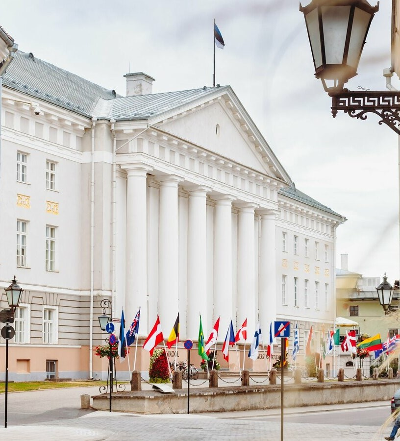

Kuidas sai alguse Tartu üliõpilaslinn?
Kindlasti on Tartu kui tudengite linna elu rikkalik. Seega viigem end enne kurssi selle ajalooga, kui seda elama hakkate.
Mõistagi peame alustama Tartu ja selle tudengielust rääkivat ajalugu Tartu Ülikooli asutamisega, mis immatrikuleeris esimesed üliõpilased 20. aprillil 1632. aastal. Vähesed teavad aga fakti, et ülikooli asutamise ideele ei tulnud üldsegi Rootsi kunigas Gustav II Adolf, vaid tema nõunik Johan Skytte. Ülikooli avamisel pidas selle esimene Kantsler Skytte oluliseks öelda, et lisaks aadlikele ja linnakodanikele peavad saama Tartu Ülikoolis (omaaegse nimega Academia Gustaviana) õppida ka talupojad. Ja nii saigi…